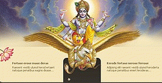

|
Религии Запада. Православные церкви: - Албанская. - Александрийская. - Американская. - Антиохийская. - Болгарская. - Грузинская. - Иерусалимская. - Кипрская. - Константинополь. - Польская. - Румынская. - Русская. - Белорусская. - Китайская. - Латвийская. - Молдавская. - Русская за границей. - Украинская. - Эстонская (МП). - Сербская. - Чехословацкая. - Элладская. - Критская. - Синайская. - Финляндская. - Японская. Старообрядчество: - Древле- православная Поморская церковь. - Русская древле- православная церковь. - Русская православная старообрядческая церковь. Неканоническое православие: - Белорусская автокефальная церковь. - Катакомбная церковь. - Македонская православная церковь. - Российская православная автономная церковь. - Русская православная церковь в изгнании. - Болгарская старостильная церковь. - Греческая старостильная церковь. - Румынская старостильная церковь. - Украинская автокефальная церковь. - Украинская православная церковь (КП). Дохалкидонские церкви: - Монофизиты. - Сиро-яковитская. - Армянская Апостольская. - Коптская. - Эфиопская. - Несториане. - Ассирийская. Протестантство: - Адвентисты Седьмого Дня. - Англиканская церковь. - Баптизм. - Вальденсы. - Евангельские христиане. - Кальвинизм. - Квакеры. - Лютеранство. - Меннонизм. - Методизм. - Мормоны. - Пресвитерианство. - Пятидесятники. - Харизматы. - Посольство Божье. - Ученики Христа. Католичество: - Римско- католическая церковь. - Восточно- католические церкви. - Старокатолики. Другие направления : - Богородичный центр. - Дети Бога (организация). - Унитарии. - Свидетели Иеговы. - Христадельфиане. - Духоборы. - Молокане. - Новая церковь. - Толстовцы. - Субботники. - Ересь жидовствующих. Сектанство: Западные секты: - Ветвь Давидова. - Народный храм. - Орден Храма солнца. - Растафарианство. - Саентология. - Савайвалисты. - Семья. - Христианская наука. - Унитарно- универсалисткая. Русские секты: - Белое братство. - Ивановцы. - Ревнители благочестия. - Семья детей Бога. - Церковь адамитов. - Церковь Откровения. - Церковь последнего завета. - Церковь Фотинии. - Чуриковцы. Квазиденоминации: - Адвентисты. - Всемирная церковь Бога. - Движение веры. - Новоапостольская церковь. - Поместная церковь. - Церковь Христа. Сатанизм: - Братство Мадра. - Крысятницы. - Общество сатаны. - Синий лотос. - Церковь Нави. - Группы культа "Вуду". - Центр "Юнивер". - "Зеленый орден". - Черный ангел. - Черное братство. - Черный дракон. - Южный крест. - Люциферизм. - Храм Сета. - Церковь сатаны. Оккультизм: - Антропософия. - Герметизм. - Каббализм. - Магия. - Мантика. - Масонство. - Розенкрейцеры. - Спиритизм. |
Бог един, хотя может быть много разных вер ... ВНИМАНИЕ ! Сайт на СМАРТФОНЕ желательно просматривать в горизонтальном положении смартфона !
В начале третьего тысячелетия современной цивилизации все из живущих на земле миллиардов людей верят. Одни верят в Бога, другие — в то, что Его нет; люди верят в прогресс, справедливость, разум. Вера является важнейшей частью мировоззрения человека, его жизненной позицией, убеждением, этическим и нравственным правилом, нормой и обычаем, по которым — точнее, внутри которых — он живёт: действует, мыслит и чувствует. Вера — универсальное свойство человеческой природы. Современная наука полагает, что “человек разумный” появился 30—40 тыс. лет назад. Примерно к тому же времени относятся обнаруженные учёными наскальные рисунки и предметы быта, уже подразумевающие существование веры. Конечно, этих находок явно недостаточно, чтобы ответить на вопрос, во что именно верили наши далёкие предки, но с их помощью можно попытаться представить, как и почему рождалась вера вообще. Несомненно, человек — часть природы. Одни и те же химические элементы слагают его тело и тела животных, деревья, воды Мирового океана, горные породы. Человек связан с окружающим миром такими крепчайшими канатами, как воздух, вода, пища, солнечный свет, необходимые для поддержания жизни. Человек участвует в вечном круговороте вещества в природе, и древний человек чувствовал это острее и чётче, чем современный. Это ощущение сохранено им даже в языке: например, по-русски рождающая земля — природа; земля, на которой родились и умерли предки, — родина; люди, живущие на ней, — народ. Люди рождаются, дают жизнь новым поколениям, а потом умирают, и тела их разрушаются, переходят из живого в неживое — так же, как звери, птицы, деревья и травы. Но человек обладает сознанием, поэтому он — не только “природное” существо. Стать человеком — значит обрести способность “осознавать” себя, т. е. видеть и чувствовать не только свою причастность этому миру, но и особенность, уникальность своего положения в нём. “Сознание” человека — это знание, разделённое с другими людьми, “совместное” понимание мира и места человека в нём. Очень важна здесь эта частичка “со-”. Опыта одного человека явно недостаточно, чтобы понять мир. Ребёнок учится, чтобы усвоить знания предыдущих поколений, и чем “старше” общество, тем дольше длится обучение. Необходимость трудиться сообща вынуждает перенимать опыт других и передавать свой, а тем самым — и обобщать его. Так в человеческом сообществе возникает “обобщённое” представление о мире. Другими словами, все люди, составляющие данное общество, знают о мире примерно одно и то же, потому что “доверяют” опыту соплеменников — прошлому и настоящему. Вот почему вера — это коллективное представление о мире. Сознание — вот тот рубеж, то великое свойство, которое создало парадокс человека. Человек для природы — “свой”, во многом он живёт по её законам и подчиняется им. Во многом, но не во всём. Человек для природы — “чужой”, его сущность не сводима к одним только природным законам. Он способен обобщать, анализировать, находить закономерности, чувствовать красоту, искать смысл и цель существования — как собственного, так и всего мира. Он создаёт вокруг себя то, чему нет аналогов в природном мире, — мир человеческой культуры. Наблюдая и осмысливая окружающий мир и себя в нём, человек понял, что его окружает не хаос, а упорядоченное мироздание, подчиняющееся так называемым законам природы. Не требовалось особой проницательности, чтобы понять: изменить эти законы, установить другие человек не в силах. Лучшие умы во все времена бились над попыткой разгадать тайну и смысл жизни на земле, отыскать ту безликую, таинственную силу, которая обнаруживает своё присутствие в мире через связь вещей и явлений; именно она выделила человека из природного мира. Для обозначения этой силы человек придумал тысячи имён, но суть их одна — это Бог. Для общения с незримым миром человек прибегает к помощи “посредника” — предмета, символа, наделённого особым свойством — служить вместилищем незримой силы. Каменные, костяные, деревянные идолы, грубые и примитивные, становятся условными знаками, обозначая то, что иначе не может быть выражено. Важна не форма идола, важно содержание, которое видит в нём человек. Так, древние греки поклонялись грубому, суковатому полену, олицетворявшему одну из богинь. Древние египтяне чтили могущественную богиню Бастет в образе кошки. Современное африканское племя, открытое сравнительно недавно, поклонялось пропеллеру самолёта, упавшего однажды с неба на их земли. Для этих людей пропеллер олицетворял невообразимую мощь, позволяющую чему-то огромному летать как птица и, наверное, способную творить и другие чудеса. Символом родства человека с природным миром выступает тотем. У многих народов существует сложная система связей с теми или иными животными, считающимися предками или покровителями человека или коллективными предками рода. “Отделённость” человека от природного мира подчёркивает система табу — запретов, имеющих смысл только для человека. Для животного нет и не может быть табу — его поведение целиком диктуется целесообразным, рациональным. Только человек способен оперировать иррациональными категориями. Правда, из-за того что сейчас невозможно с достоверностью реконструировать мировоззрение древнего человека, нельзя утверждать и полную иррациональность многих табу. Некоторые из них выглядят вполне рациональными. Например, табу на употребление в пищу тотема. Если тотем рода — кенгуру, то кенгуру есть нельзя. Но вот как могло возникнуть табу, запрещающее встречу женщины в период беременности с братом мужа, можно только догадываться. Если незримая сила может сконцентрироваться в каком-либо предмете, то достаточно стать обладателем этого предмета, чтобы приобрести дополнительные возможности. Так появляется фетиш, или амулет, — предмет произвольной природы и формы (необычный камень, лапка убитого зверя, перо птицы), способный охранять обладателя от опасностей и бед и приносить ему удачу. Если беда всё же приключалась, значит, амулет утратил силу или перестал покровительствовать хозяину. Истинного облика Бога не ведал никто, и это понятно: Бог невмещаем человеческим сознанием, иначе Он не был бы Богом. От Него люди получали этические законы, правила жизни, и никакой другой логикой, кроме божественной, эти правила не могли быть объяснены. Наиболее показательна в этом отношении священная история еврейского народа. С точки зрения обычной истории заповеди, данные Богом Моисею на горе Синай, не имели смысла. Они могли исходить только от того, кому известен ход событий до самых отдалённых во времени пределов, кому известен смысл существования человека. Из трёх обстоятельств — божественной воли, культурных традиций конкретного народа и особенностей мышления конкретного человека — складывается всё многообразие религиозного опыта человечества. Вера принимает самые различные формы, эти-то формы и называются религией. В индуизме — тысячи богов, в иудаизме — один, но в основе и той и другой религии лежит вера. И это позволяет предположить, что внешние разнообразие и пестрота культов, обрядов, философий многочисленных религиозных систем опираются на некоторые общие мировоззренческие представления. Каким же предстаёт мир в религиозном сознании? Прежде всего религиозному сознанию ведомы цель и смысл существования мира и человека в нём — в пределах конкретной мировоззренческой картины. Основу этой картины в свою очередь составляет представление о существовании двух (или более) миров: мира зримого, земного, человеческого и мира незримого, духовного, божественного. У каждого из этих миров есть своя история, свои законы, и в каждом из них действуют люди или другие сущности, и каждый имеет свое символическое выражение. Практически все религии сходятся на том, что нынешнее состояние мира и самого человека ненормально, человек должен быть “спасён”. Спасён от чего? Спасать тело бессмысленно, поскольку весь опыт человечества говорит о том, что тело умрёт. Но зачем же тогда живёт человек и как находит он силы жить, зная о конце, которого не избежать? Многие религии учат, что земная жизнь человека есть жизнь временная. Одни религии воспринимают её как страдание и соответственно учат спасению от жизни другие учат спасению от смерти, но смерти куда более серьезной, чем смерть тела, — от смерти души. Представление о душе, дарованной Богом, о её бессмертии, о том, что духовное совершенствование важнее мирских забот, — основная составляющая часть многих религий. Наличие многих религий неизбежно приводит к вопросу о том, какая же из них истинна. Ведь Истина должна быть одна, а религий — много. Не значит ли это, что верна лишь одна из них, а другие — вредны и ложны? Для исповедующих любую веру естественно считать свою религию единственно верной, а все прочие — неистинными, не ведущими к подлинному спасению. Одним из инструментов отыскания истины человечество привыкло считать науку, однако вопрос об истинной вере оказывается вне её компетенции. Цели и задачи науки — другие. Её методы разрабатывались для познания зримого мира и применимы к объектам любой степени сложности, но всё же менее сложным, чем человек. Можно предположить, например, что каждая из религий содержит какую-то часть единой Истины, и если объединить их, то удастся получить удовлетворяющую всех, одну-единственную, истинную религию. Попытки создать такую синкретическую (от греч. “соединение”) религию предпринимались, но приводили к парадоксу: созданное таким образом учение оказывалось меньше и мельче, чем религии, из фрагментов которых оно составлялось. Экуменическое движение, стремящееся объединить хотя бы разные направления христианства, также пока не достигло своей цели. Вопрос о соотношении истинного и ложного в различных религиях один из сложнейших. Попытаемся очертить некоторые подходы к его решению. Первый из них заключается в том, что ни одно из великих вероучений не может быть совершенно ложным, иначе оно не смогло бы развиться в религиозные представления, существующие веками и тысячелетиями. Вместе с тем абсолютная истина никак не может стать достоянием человека просто потому, что ни один человек не является всеведущим. Не является всеведущей и какая-либо религия или церковь. Поэтому говорить можно лишь о степени истинности той или иной религии, т. е. о ступенях восхождения к абсолютной истине, а также о том, что каждая религия отражает ту или иную грань (или несколько граней) абсолютной истины, практически бесконечно многогранной. Один из способов снятия противоречий, существующих между различными религиями, предлагает русский религиозный мистик Даниил Андреев. Он рассматривает в качестве примера одно из основных противоречий между исламом и христианством. Как известно, ислам — строго монотеистическая религия. Ислам отрицает христианский догмат о Троице, то есть о троичности Бога, поскольку духовный опыт основателя ислама пророка Мухаммада не подтверждает этого догмата. Д. Андреев пишет: “...ничей вообще опыт не может содержать подтверждение всех истинных идей, возникших ранее, в ходе коллективного человеческого богопознания и миропознания. Всякий личный опыт ограничен; только премудрость Всеведущего охватывает всю сумму истин „в себе". Поэтому то обстоятельство, что Мухаммад не пережил своим духовным опытом ничего, подтверждающего тезис Троичности, само по себе никак не должно служить аргументом для опровержения этой идеи, даже в глазах ортодоксальных мусульман. Вместо формулы: „Пророк, познав совершенное единство Божие, убедился в ложности учения о Троице", следует, по справедливости, формулировать так: „Пророк, познав совершенное единство Божие, не получил, однако, указаний на Троичность Единого"”. Но понять причины возникновения противоречий — не значит уничтожить их, приведя все религии к некоему “общему знаменателю”. По-прежнему для мусульманина Бог один, и этот Бог — Аллах, а Иисус — только человек, один из многих пророков — как и для иудея. Христианин же верит, что Иисус Христос — Сам воплотившийся Бог. Христиане верят, что “человеку положено однажды умереть, а потом — Суд”, индуисты и буддисты говорят о длинной цепи перерождений каждой души. Обратимся ещё раз к тем факторам, которые влияют на формирование конкретной религии. Бог говорит с каждым народом на его собственном языке — на языке культурных традиций народа, особенностей его национального характера, способа мышления и богопознания. Душа народа — тайна не меньшая, чем душа и личность того пророка или просветлённого, который передал своему народу божественное откровение. И третья, самая непостижимая тайна — воля Бога, открывающего Себя человеку. Религий и систем верований на свете десятки тысяч. Раскрыть же внутреннюю суть конкретной религии может только душа, живущая именно этой верой. Невозможно даже в краткой форме изложить все фрагменты истории развития той или иной религии: религиозные войны, крестовые походы, межрелигиозная вражда — всё это дела и стремления человеческие, а прикрываются они священными символами или просто красными или чёрными знаменами — к вопросам веры это отношения не имеет. Неразрешима задача найти аргументы в пользу той или иной религии. Однако нет, не было и не будет на земле народа, представители которого не задавали бы себе вопросов: “Кто мы?”, “Откуда и куда мы идём?”, “К чему стремимся?”. “Где наш настоящий дом?”. Возможные ответы содержат мировые и национальные религии.
Я попытался на этом сайте сделать Образовательный портал Глубокоуважаемый Читатель !
Я попытался создать Образовательный портал о религиях мира для тех кто уже имеет свою Веру и для тех , кто еще в поисках своей Веры. Но тема Веры и Религии несчерпаема, поэтому я дополнительно предлагаю Вам : Ссылки на некоторые другие Религиозные Сайты.
Пусть всегда с Вами будет Сила и Вера !
Искренне Ваш - Валентин Иванович Приходько, Украина. Некоторые основы мировых религий :
Примерное количество последователей разных религий.
Краткий обзор основных книг.
Главные события и праздники.
Основные обряды .
Папы Римские.
Патриархи Русской православной церкви.
Те , кто уже потерял Веру ... - Атеизм. - Агностицизм. - Материализм. - Идеализм. - Скептицизм. - Нигилизм. - Цинизм. - Нравственность. - Совесть. |
 Религии Востока. Ислам : - Ваххабиты. - Хариджиты. - Мурджииты. - Сунниты. - Суфизм. - Мюридизм. - Шииты. - Бабизм. - Алиды. - Исмаилиты. - Алавиты. - Друзы. - Традиционализм. - Фундаментализм. - Модернизм. Буддизм : - Брахманизм. - Веды. - Тхеравада. - Школы Буддизма. - Махаяна. - Чань (Дзэн). - Йогачара. - Мадхъямика. - Тяньтай. - Амидаизм. - Хуаянь/Кэгон. - Ваджраяна. - Буддизм Тибета. - Ньингма. - Сакья. - Гэлуг. - Кагью. Религии Китая : - Конфуцианство. - Даосизм. - Легизм. - Моизм. - Натурфилософия. - Номинализм. Религии Японии : - Синтоизм. Религии Индии : - Индуизм. - Парсизм. - Джайнизм . - Сикхизм. Религии Ирана : - Зороастризм. - Езидизм. Иудаизм : - Геры. - Консервативный. - Ортодоксальный. - Реформистский. - Хасиды. Религии Африки : - Диаспорик. Нетрадиционные Религии : - Теософия. - Шаманизм. - Растафарианство. - Вуду. Религии Древности : - Европы. - Месопотамии. - Египта. - Америки. - Греции. - Рима. - Скандинавии. - Кельтов. - Славян. Секты Востока : Индии: - Ананда Марга. - Бабаджисты. - Братство Ананда. - Брахма Кумарис. - Движение Шри Чинмоя. - Институт знаний о тождественности. - Кришнаиты. - Миссия божественного света. - Радхасоами Сатсангх. - Сатья Саи Баба. - Сахаджа-йога. - Тантра-йога. - Тантра-Сангха. - Трансцедентальная медитация. Японии : - Аум Синрикё. - Лайф Спэйс. - Рейки. - Рэй ю кай. - Сокка гаккай. - Хо-но хана. Китая : - Фалуньгун. - Молния Востока. Кореи: - Церковь объединения. Вьетнама : - Као дай. - Хоа-хао. Филлипин : - Асоциация великодушных миссионеров. Ислама: - Бахаизм. Африки: - Аладура. - Бапостоло. - Мунгики. - Церковь возрождения 10-и заповедей. - Чома. Неоязыческие: - Группа Доброслава. - Инглиистическая церковь. - Схорон еж словен. - Школа Диворга. - Ошмарий-чимарий. - Удмурт вось. - Арординери Ухт. - РУНвира. Движение New Age: - Академия Золотова. - Анастасия. - Бажовцы. - Белая экология. - Зелёное братство. - Зелёный орден. - Крылья совершенства. - Радастея. - Последователи Григория Грабового. - Тетрада. - Храм Шеол. - Центр Единение. - Центр Кадуцей. - Центр космического сознания. - Центр Униведа. - Школа единения Всеволод. - Экология сознания. - Движение Грааля. - Небесные врата. - Новый акрополь. - Последователи Карлоса Кастанеды. - Раэлианское движение. - Форум. - Церковь всеобщая и торжествующая. |